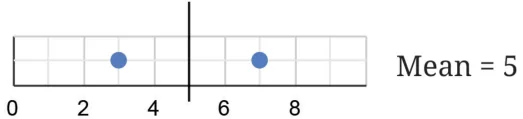
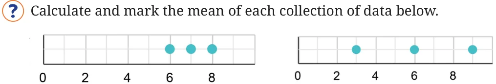
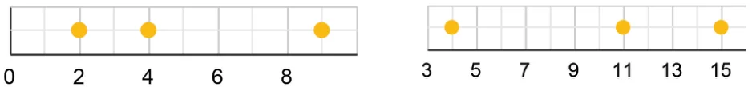
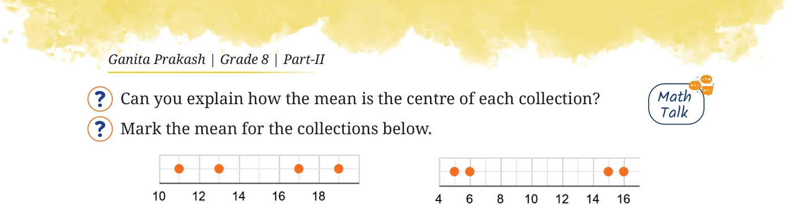
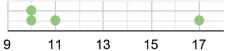
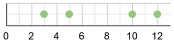
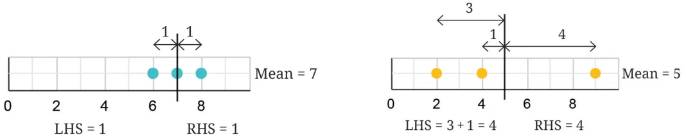
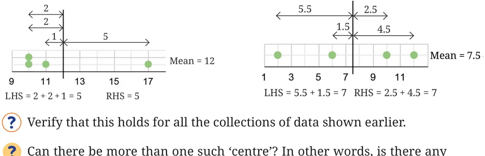
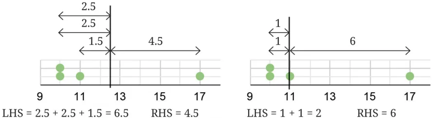
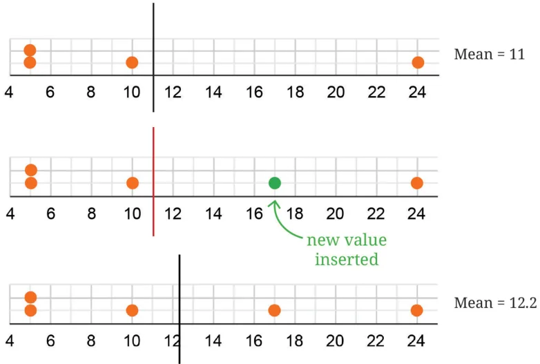

Last year, we learnt about the mean and median. Recall that the mean of some data is the sum of all the values divided by the number of values in the data. The median is the middle value when the data is sorted. We shall try to understand the mean and median from a different perspective and see how the mean behaves with changing data. Consider any 2 numbers. Find their average/arithmetic mean. Repeat this by taking other pairs. What do you observe? For example, let the two numbers be 3 and 7. Their average is \(\frac{3+ 7}{2} = 5\). Taking another pair of numbers, say 8 and 9, their average is \(\frac{8+ 9}{2} = 8.5\). Visualising these as dot plots we get

Notice that the mean is exactly halfway between the two numbers. We have learnt earlier that the arithmetic mean is a measure of central tendency and represents the ‘centre’ of the data. Let us see how the mean represents the ‘centre’ in the case of 3 numbers.





Can you explain how the mean is the centre of each collection? Is the mean the midpoint of the two endpoints/extremes of the data? It is not always so. Instead, the total distances are equal on both the sides of the mean. This is illustrated through the following dot plots.


Can there be more than one such ‘centre’? In other words, is there any other value such that the sum of the distances to the values lower than it and the values higher than it will still be equal? In the case of the collection 10, 10, 11, and 17 whose mean is 12, suppose there is a different centre larger than 12. Clearly, all the distances on the LHS will increase and the distances on the RHS will decrease. Thus, it is no longer the ‘centre’. Similarly, for any value smaller than 12, the distances on the LHS will decrease while those on the RHS will increase.

Both these cases are illustrated in the following diagram. Therefore, there is only one centre.

Will including a new value in the data increase or decrease the mean? When a new value greater than the mean is included, the mean increases to maintain the balance between the sum of distances on the LHS and RHS, as illustrated below.

Similarly, if a value smaller than the mean is included, then the new mean will be less than before.
What happens to the mean when an existing value is removed? When will the mean increase, decrease, or stay the same? What happens to the mean if a value equal to the mean is included or removed? Try to explain this using the fair-share interpretation of mean that we studied last year.